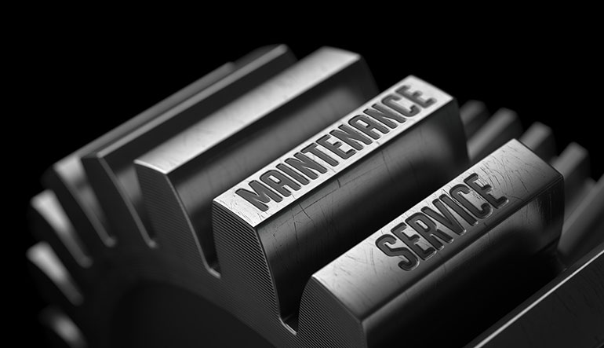

Whether you demand web development solution or it is a custom web development project, we are capable of tackling it in the best manner.
Our team is entirely focused on delivering quality services and ensure the desired outcomes are achieved for your online business.
We combine both creativity and imagination to render the 100% user-friendly and interactive web applications and web solutions.
QUALITY ASSUARANCE
RatSan Technology brings together a well-developed Quality Assuarance process and the capabilities of an in-house testing center to meet the customer’s quality expectations.
To bring out high-quality desktop solutions, we use proven testing methodologies, techniques, and tools to perform different test types, including functional, performance, and localization ones.
With 24/7 support, we strive for high-quality resolution of any issue within a reasonable time.
Our desktop applications can be delivered with the required test documentation (test plans, test cases, checklists, etc.) to give the Customer a clear view of the application performance in different cases and simplify its modification in the future.

APPLICATIONS
We offer platform-specific and cross-platform desktop app development services to help you turn a solid software idea into a market sensation.
At the pre-development stage, our team emphasizes careful planning and architecture design to advise on better technological options with respect to the customer’s challenge and industry.
We suggest how to reduce development costs and improve the solution’s performance.
We plan every user interaction with the software to make it convenient and easy to follow.
Work on separate parts of the Customer’s project, e.g. testing, delivery of a platform specific version or application maintenance.
MAINTAINENCE
We offer platform-specific and cross-platform desktop app development services to help you turn a solid software idea into a market sensation.
RatSan Technology's team offers a full range of maintenance services to let the customer seamlessly introduce the desktop software and its updates into the work of end users, as well as adjust the application to the emerging business challenges by introducing new features.
With 24/7 support, we strive for high-quality resolution of any issue within a reasonable time.
RatSan Technology's standard packages cover maintenance services for 1, 5, and 10 years, with an option to be prolonged when the service period expires.